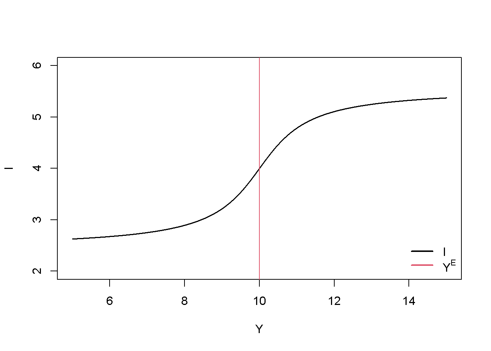
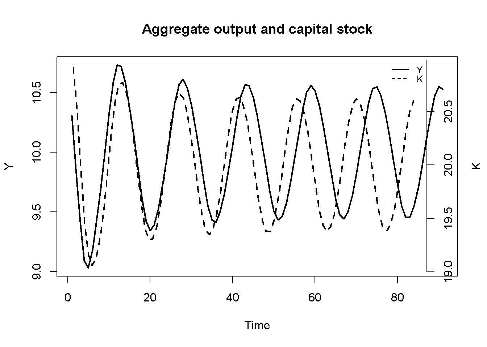
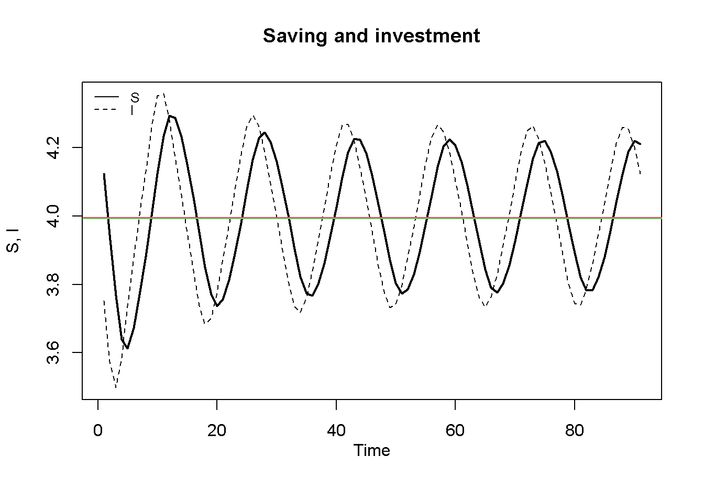
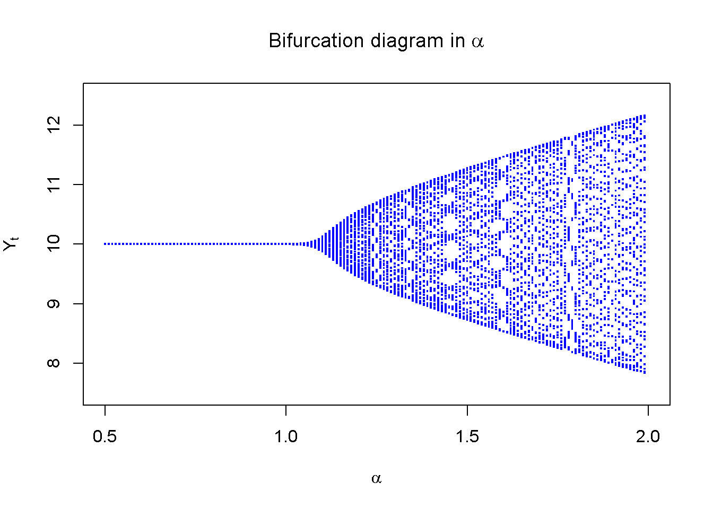
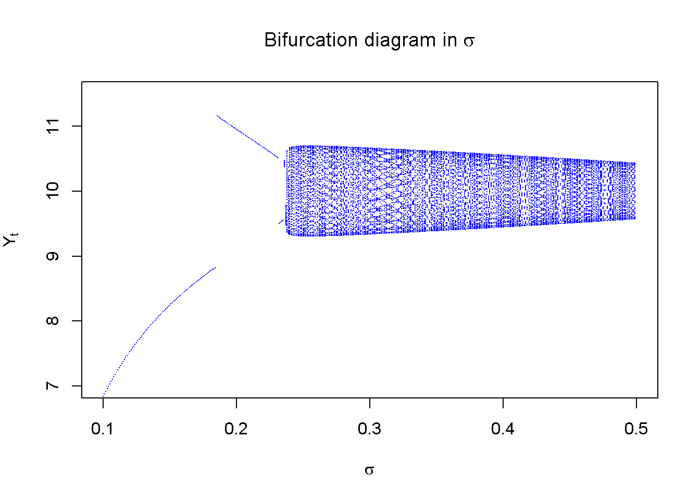
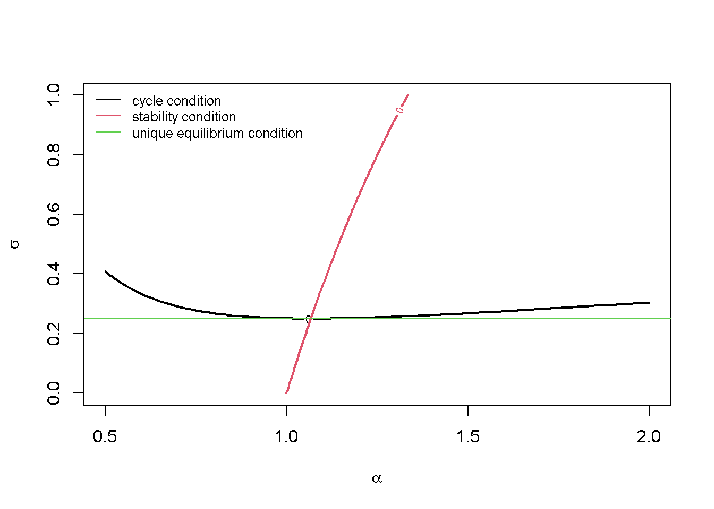

This model captures some key features of Nicholas Kaldor (1940)’s nonlinear model of endogenous business cycle fluctuations. Unlike Samuelson (1939)’s linear multiplier-accelerator model (see Chapter 2 and Chapter 9), which usually requires repeated external shocks to produce sustained cycles, Kaldor (1940) outlined a model that would produces endogenous, i.e. shock-independent, fluctuations.1Kaldor (1940) assumed that investment and saving were very sensitive to income for normal levels of income, but relatively insensitive for extreme values of income. Graphically, these assumptions give rise to sigmoid-shaped investment and saving functions. As a result, the goods market equilibrium becomes locally unstable due to strong positive feedback effects, but then becomes stable once the economy has sufficiently moved away from equilibrium during booms or busts. Similar to Hicks (1950) (see Chapter 17), Kaldor (1940) also assumed a locally unstable goods market, but unlike Hicks who postulated discrete bounds that would prevent fluctuations from exploding, Kaldor (1940) considered smooth bounds that stemmed from the investment and saving behaviour of firms and households. For instance, at high levels of output, investment may become insensitive to output due to rising costs of construction or surging financing cost. Similarly, for low levels of output profit opportunities may be missing, thereby rending investment insensitive to changes in output. It is then the interaction between output and the capital stock that turns these bounded output dynamics into a cycle: Kaldor (1940) assumed that the capital stock exerts a negative effect on investment as an increasing capital stock lowers the marginal efficiency of capital, whereas output pushes up the dynamics of the capital stock due to the accelerator effect.
Kaldor (1940)’s initial paper mostly relied on graphical analysis. A continuous-time version formalisation of his graphical was subsequently presented in Chang and Smyth (1971). Textbook treatments can be found in Gabisch and Lorenz (1989), chapter 4. We present a discrete time version of the Kaldor model due to Bischi et al. (2001).
where \(Y_t\), \(K_t\), \(S_t\), and \(I_t\) represent aggregate output, the capital stock, saving, and investment, respectively.
Equation 18.1 specifies that output reacts slugglishly to excess demand \((I_t > S_t)\) and excess supply \((I_t < S_t)\), with the speed of adjustment given by \(\alpha\). A high value of \(\alpha\) means that firms respond strongly to disequilibria in the goods market. Equation 18.2 is the law of motion of the capital stock, with \(\delta\) representing the rate of depreciation. Equation 18.3 is th saving function. While Kaldor (1940) assumed a non-linear (sigmoid-shaped) Keynesian saving function, Bischi et al. (2001) (for simplicity) use a linear saving function with a constant marginal propensity to save out of income \((\sigma)\). The key nonlinearity in this version of the Kaldor model lies in the investment function Equation 18.4. The first term in the investment function, \(\sigma Y^E\), is a normal level of saving that prevails for a normal or expected level of output, \(Y^E\). The second term, \(\gamma \left(\frac{\sigma Y^E}{\delta} - K_t \right)\), incorporates a negative feedback effect of the level of the capital stock on investment, where \(\frac{\sigma Y^E}{\delta}\) is the normal level of the capital stock. The third term, \(\arctan(Y_{t}- Y^E)\), introduces the sigmoid relationship between investment and output, modelled by means of the arctangent function. Investment is increasing in aggregate output; and this effect is stronger for smaller deviations of actual investment from normal output. Figure 18.1 plots an example of this sigmoid-shaped investment function for a normal level of output of \(Y^E=10\).
#### Plot investment function # Set parameter valuesalpha=1.2# adjustment speed of outputdelta=0.2# depreciation ratesigma=0.4# propensity to saveY_E=10# normal level of outputgamma=0.6# sensitivity of investment to deviations of actual from normal cap stockK=sigma*Y_E/delta# set capital stock to normal level# Create investment function using Y as argumentinv=function(Y){sigma*Y_E+gamma*(sigma*Y_E/delta-K)+atan(Y-Y_E)}# Plot the function in (I,Y) spacecurve(inv, from =5, to =15, col =1, xlab="Y", ylab="I" , main="", lwd=1.5, n=10000, ylim=range(2,6))abline(v=Y_E, col=2)legend("bottomright", legend =c("I", expression(Y^E)), col =c(1, 2), lwd =2, bty ="n")

Figure 18.1: Kaldor’s sigmoid investment function
Python code
#### Plot investment function # Import necessary librariesimport numpy as npimport matplotlib.pyplot as plt# Set parameter valuesalpha =1.2# adjustment speed of outputdelta =0.2# depreciation ratesigma =0.4# propensity to saveY_E =10# normal level of outputgamma =0.6# sensitivity of investment to deviations of actual from normal cap stockK = sigma * Y_E / delta # set capital stock to normal level# Define the investment function using Y as argumentdef inv(Y):return sigma * Y_E + gamma * (sigma * Y_E / delta - K) + np.arctan(Y - Y_E)# Plot the function in (I,Y) spaceY_values = np.linspace(5, 15, 10000)I_values = inv(Y_values)plt.figure(figsize=(8,6))plt.plot(Y_values, I_values, color='black', linewidth=1.5, label='I')plt.axvline(x=Y_E, color='red', linestyle='--', label='$Y^E$')# Customize the plotplt.xlabel("Y")plt.ylabel("I")plt.title("Investment Function")plt.ylim(2, 6)plt.legend(loc="lower right", frameon=False)plt.grid(True, linestyle='--', alpha=0.6)plt.show()
Simulation
Parameterisation
Table 1 reports the parameterisation used in the simulation. We will analyse below how the model’s dynamic properties change as \(\alpha\) and \(\sigma\) vary.
Table 1: Parameterisation
\(\alpha\)
\(\delta\)
\(\sigma\)
\(Y^E\)
\(\gamma\)
1.2
0.2
0.4
10
0.6
Simulation code
# Clear the environmentrm(list=ls(all=TRUE))# Set number of periodsQ=200# Set number of scenarios Scen=1# Create (Scen x Q)-matrices that will contain the simulated dataY=matrix(data=1,nrow=Scen,ncol=Q)# Income/outputK=matrix(data=1,nrow=Scen,ncol=Q)# capital stockS=matrix(data=1,nrow=Scen,ncol=Q)# savingI=matrix(data=1,nrow=Scen,ncol=Q)# Investment# Set fixed parameter valuesalpha=1.2# adjustment speed of outputdelta=0.2# depreciation ratesigma=0.4# propensity to saveY_E=10# normal level of outputgamma=0.6# sensitivity of investment to deviations of actual from normal cap stock# Simulate the model by looping over Q time periods for Scen different scenariosfor(iin1:Scen){for(tin2:Q){for(iterationsin1:500){# run the model 500-times in each period#Model equations#(1) OutputY[i,t]=Y[i,t-1]+alpha*(I[i,t-1]-S[i,t-1])#(2) Capital stockK[i,t]=(1-delta)*K[i,t-1]+I[i,t-1]#(3) SavingS[i,t]=sigma*Y[i,t]#(4) InvestmentI[i,t]=sigma*Y_E+gamma*(sigma*Y_E/delta-K[i,t])+atan(Y[i,t]-Y_E)}# close iterations loop}# close time loop}# close scenario loop
Python code
# Import necessary librariesimport numpy as np# Set number of periodsQ =200# Set number of scenariosScen =1# Create (Scen x Q)-matrices to contain the simulated dataY = np.ones((Scen, Q)) # Income/outputK = np.ones((Scen, Q)) # Capital stockS = np.ones((Scen, Q)) # SavingI = np.ones((Scen, Q)) # Investment# Set fixed parameter valuesalpha =1.2# Adjustment speed of outputdelta =0.2# Depreciation ratesigma =0.4# Propensity to saveY_E =10# Normal level of outputgamma =0.6# Sensitivity of investment to deviations of actual from normal capital stock# Simulate the model by looping over Q time periods for Scen different scenariosfor i inrange(Scen):for t inrange(1, Q):for iterations inrange(500): # Run the model 500 times in each period# Model equations# (1) Output Y[i, t] = Y[i, t-1] + alpha * (I[i, t-1] - S[i, t-1])# (2) Capital stock K[i, t] = (1- delta) * K[i, t-1] + I[i, t-1]# (3) Saving S[i, t] = sigma * Y[i, t]# (4) Investment I[i, t] = sigma * Y_E + gamma * (sigma * Y_E / delta - K[i, t]) + np.arctan(Y[i, t] - Y_E)
Plots
Figure 18.2 displays the dynamics of aggregate output. The model generates endogenous cycles in output that are permanent, i.e. they don’t require any external shocks, and they are (roughly) periodic with a cycle length from peak (trough) to peak (trough) of around 17 periods. What generates the turning points? Suppose income is close to its normal level of \(Y^E = 10\), but on an increasing trajectory. The accelerator effect on investment will amplify this process as firms will increase their investment, which raises aggregate demand and increases income further. As aggregate output increases, this positive feedback effect gradually becomes weaker, possibly because firms face tighter supply constraints. The rise in the capital stock exerts a negative feedback effect on investment and will eventually dominate the accelerator effect. Firms then start reducing investment and the boom turns into a bust. The accelerator effect again amplifies this downward trajectory until the capital stock has sufficiently fallen to make investment attractive again. This allows the cycle to repeat itself.
# Set start and end periods for plotsTmax=100Tmin=10# Plot aggregate output and capital stockplot(Y[1, Tmin:Tmax], type="l", col=1, lwd=2, lty=1, xlab="Time", ylab="Y")title(main="Aggregate output and capital stock", cex=0.8)par(mar =c(5, 4, 4, 4)+0.3)par(new =TRUE)plot(K[1, Tmin:Tmax], type="l", col=1, lwd=2, lty=2, font.main=1, cex.main=1,ylab ='', axes=FALSE, xlab ='', ylim =range(K[1, Tmin:Tmax]), cex=0.8)axis(side =4, at=pretty(K[1, Tmin:Tmax]))mtext("K", side =4, line =3)legend("topright", legend=c("Y", "K"), lty=1:2, cex=0.8, bty ="n", y.intersp=0.8)

Figure 18.2: Output and capital stock
Python code
# Set start and end periods for plotsTmax =100Tmin =10# Plot aggregate output and capital stockfig, ax1 = plt.subplots(figsize=(8, 6))# Plot Y (aggregate output)ax1.plot(range(Tmin, Tmax), Y[0, Tmin:Tmax], color='black', linewidth=2, linestyle='-', label='Y')ax1.set_xlabel("Time")ax1.set_ylabel("Y", color='black')ax1.tick_params(axis='y', labelcolor='black')ax1.set_title("Aggregate Output and Capital Stock", fontsize=10)# Create a twin axis for the capital stockax2 = ax1.twinx()# Plot K (capital stock)ax2.plot(range(Tmin, Tmax), K[0, Tmin:Tmax], color='black', linewidth=2, linestyle='--', label='K')ax2.set_ylabel("K", color='black')ax2.tick_params(axis='y', labelcolor='black')
Figure 18.3 displays the endogenous fluctuations in saving and investment. The horizontal lines represent the average level of saving and investment computed from the simulated data.2 It can be seen that these are virtually identical, reflecting the fact that that the model generates cycles around the goods market equilibrium but never reaches it.
## Calculate average saving and investment ignoring the first 10 periodsS_avr=rowMeans(S[,10:Q, drop=FALSE])I_avr=rowMeans(I[,10:Q, drop=FALSE])#Plot saving and investment along with their long-run average valuesplot(S[1, Tmin:(Tmax)],type="l", col=1, lwd=2, lty=1, xlab="", ylab="S, I", ylim=range(I[1, Tmin:Tmax],S[1, Tmin:(Tmax)]))title(main="Saving and investment", xlab ='Time',cex=0.8,line=2)lines(I[1, Tmin:Tmax],lty=2)abline(h=S_avr, col=2)abline(h=I_avr, col=3)legend("topleft", legend=c("S", "I"), lty=1:2, cex=0.8, bty ="n", y.intersp=0.8)

Figure 18.3: Saving and investment
Creating a bifurcation diagram
Next, we explore numerically under which conditions the model generates endogenous cycles. To do so, we need to introduce some terminology. First, a limit cycle is defined as a closed orbit of the state variables of a dynamic system around a locally unstable equilibrium (see Gandolfo (2009), chap. 23). In the neighbourhood of the equilibrium, the system is unstable and gets pushed away from it. However, rather than exhibiting explosive behaviour, the system eventually reaches a periodic cycle as it is bounded by nonlinearities. The fluctuations in Figure 18.2 indeed constitute a limit cycle. Second, a bifurcation is defined as a qualitative change of the behaviour of a dynamic system that occurs as a parameter of the system crosses a critical value (see Gandolfo (2009), chap. 24). Third, a Hopf bifurcation is a bifurcation that gives rise to a limit cycle.3
We can analyse the emergence of Hopf bifurcations in this model by means of so-called bifurcation diagrams that plot the dynamics of a representative endogenous variable variable from the model against different values of a parameter of interest. This is accomplished by fixing a parameterisation, simulating the model for a specific value of the parameter of interest, saving the last \(T_0\) values of the chosen endogenous variable, and repeating the process for a marginally different value of the parameter of interest. The \(T_0\) data points from each run are then placed on the bifurcation diagram.
The following code first creates a function called kaldor that simulates the Kaldor model,4 taking values of \(\alpha\) and \(\sigma\) as arguments, and returns the last \(T_0=50\) values of output.
# Clear the environmentrm(list=ls(all=TRUE))# Define a function called "kaldor" that simulates a reduced-form version of the model# and returns the last 50 values of Y; use alpha and sigma as arguments that # need to be supplied when the function is calledkaldor<-function(alpha, sigma){# Set how many last values of output you want to saveT_0=50# Set number of periodsQ=200# Create matrices for simulated dataY=matrix(data =1, nrow =1, ncol =Q)# Income/outputK=matrix(data =1, nrow =1, ncol =Q)# Capital stock# Set fixed parameter valuesgamma=0.6# Sensitivity of investment to deviations of actual from normal cap stockdelta=0.2# Depreciation rateY_E=10# Normal level of output# Simulate the model by looping over time periodsfor(tin2:Q){## Model equations# OutputY[1, t]=Y[1, t-1]+alpha*(sigma*Y_E+gamma*(sigma*Y_E/delta-K[1, t-1])+atan(Y[1, t-1]-Y_E)-sigma*Y[1, t-1])# Capital stockK[1, t]=(1-delta)*K[1, t-1]+sigma*Y_E+gamma*(sigma*Y_E/delta-K[1, t-1])+atan(Y[1, t-1]-Y_E)}# Close time loopreturn(Y[1, (Q-T_0):Q])# Return last 50 periods of output}
Next, we prepare an initially empty bifurcation diagram and then loop over the kaldor function, increasing the parameter \(\alpha\) from 0.5 to 2 in successive steps of 0.01 (while keeping \(\sigma\) fixed at 0.4), and place the resulting data points on the bifurcation diagram. From Figure 18.4, it can be seen that there indeed appears to be a critical value \(\alpha_0 \approx 1.15\) below which the model does not generate a limit cycle because the equilibrium is stable. By contrast, for values of \(\alpha\) above that critical value, the model generates a limit cycle whose amplitude appears to be increasing in \(\alpha\).
# Prepare the bifurcation diagram in alphaplot(NULL, xlim =c(0.5, 2.0), ylim =c(7.5, 12.5), xlab =expression(alpha), ylab =expression(Y[t]), pch =".", cex =0.6, col ="blue", main =expression("Bifurcation diagram in "*alpha))# Run kaldor function for different values of alpha (keeping sigma at 0.4) # and place data points on bifurcation diagram alpha=0.5# initialise alphawhile(alpha<=2){# run kaldor model until alpha assumes value of 2output=kaldor(alpha=alpha, sigma=0.4)# obtain values of Y for given value of alphapoints(rep(alpha, length(output)), output, pch =".", col ="blue", cex =2)# add data points to diagramalpha=alpha+0.01# increase alpha stepwise}

Figure 18.4: Bifurcation diagram for different sensitivities of output to saving-investment gap
Python code
### Generate kaldor function# Define a function called "kaldor" that simulates a reduced-form version of the model# and returns the last 50 values of Ydef kaldor(alpha, sigma):# Set how many last values of output you want to save T_0 =50# Set number of periods Q =200# Create matrices for simulated data Y = np.ones((1, Q)) # Income/output K = np.ones((1, Q)) # Capital stock# Set fixed parameter values gamma =0.6# Sensitivity of investment to deviations of actual from normal capital stock delta =0.2# Depreciation rate Y_E =10# Normal level of output# Simulate the model by looping over time periodsfor t inrange(1, Q):# Model equations# (1) Output Y[0, t] = Y[0, t-1] + alpha * ( sigma * Y_E + gamma * (sigma * Y_E / delta - K[0, t-1]) + np.arctan(Y[0, t-1] - Y_E) - sigma * Y[0, t-1])# (2) Capital stock K[0, t] = (1- delta) * K[0, t-1] + ( sigma * Y_E + gamma * (sigma * Y_E / delta - K[0, t-1]) + np.arctan(Y[0, t-1] - Y_E))# Return last 50 periods of outputreturn Y[0, (Q-T_0):Q]#### Generate bifurcation diagram# Prepare the bifurcation diagram in alphaplt.figure(figsize=(10, 6))plt.title(r'Bifurcation Diagram in $\alpha$', fontsize=14)plt.xlabel(r'$\alpha$', fontsize=12)plt.ylabel(r'$Y_t$', fontsize=12)plt.xlim(0.5, 2.0)plt.ylim(7.5, 12.5)# Run kaldor function for different values of alpha (keeping sigma at 0.4)# and place data points on bifurcation diagramalpha =0.5# Initialize alphawhile alpha <=2.0:# Obtain values of Y for the given value of alpha output = kaldor(alpha=alpha, sigma=0.4)# Add data points to the diagram plt.scatter([alpha] *len(output), output, color='blue', s=4, marker='.')# Increase alpha stepwise alpha +=0.01# Show the bifurcation diagramplt.show()
Figure 18.5 does the same for the parameter \(\sigma\), starting from \(\sigma=0.1\) and raising it to 0.5 in steps of 0.001 (while keeping a fixed \(\alpha\) of 1.2). The parameter \(\sigma\) appears to exhibit a critical value \(\sigma_0 \approx 0.25\) above which a limit cycle occurs.
# Prepare the bifurcation diagram in sigmaplot(NULL, xlim =c(0.1, 0.5), ylim =c(7, 11.5), xlab =expression(sigma), ylab =expression(Y[t]), pch =".", cex =0.6, col ="blue", main =expression("Bifurcation diagram in "*sigma))# Run kaldor function for different values of sigma (keeping alpha at 1.2)# and place data points on bifurcation diagram sigma=0.1# initialise alphawhile(sigma<=0.5){# run kaldor model until sigma assumes value of 0.5output=kaldor(alpha=1.2, sigma=sigma)# obtain the values of Y for given value of sigmapoints(rep(sigma, length(output)), output, pch =".", col ="blue", cex =1)# add data points to diagramsigma=sigma+0.001# increase sigma stepwise}

Figure 18.5: Bifurcation diagram for different saving propensities
Directed graph
Another perspective on the model’s properties is provided by its directed graph. A directed graph consists of a set of nodes that represent the variables of the model. Nodes are connected by directed edges. An edge directed from a node \(x_1\) to node \(x_2\) indicates a causal impact of \(x_1\) on \(x_2\).
##### Generate directed graph# Import necessary librariesimport networkx as nx# Construct auxiliary Jacobian matrix for 5 variables:# Endogenous: (1) Y, (2) K, (3) S, (4) I# Exogenous: (5) YEM_mat = np.array([[0, 0, 1, 1, 1], # Y [0, 0, 0, 1, 0], # K [1, 0, 0, 0, 0], # S [1, 1, 0, 0, 1], # I [0, 0, 0, 0, 0]]) # YE# Create adjacency matrix from transpose of auxiliary JacobianA_mat = M_mat.T# Create directed graph from adjacency matrixG = nx.DiGraph(A_mat)# Define node labelsnodelabs = {0: "Y", 1: "K", 2: "S", 3: "I", 4: r"$Y^E$"}# Plot the graph using the specified approachpos = nx.spring_layout(G, k=0.5)plt.figure(figsize=(8, 4))nx.draw_networkx(G, pos, node_size=200, node_color="lightblue", edge_color="black", width=1.2, arrowsize=10, arrowstyle='->', font_size=8, font_color="black", with_labels=True, labels=nodelabs)plt.title("Directed Graph of Kaldor Model", fontsize=14)plt.show()
Figure 18.6 illustrates the endogenous cycle generated by the interaction between income \(Y\), investment \(I\), saving \(S\), and the capital stock. An important exogenous variable depicted here is the normal income level \(Y^E\), which sets the equilibrium around which output fluctuates.
Analytical discussion
To analyse the dynamic properties of this discrete-time version of the Kaldor (1940) model, we first reduce it to a two-dimensional system in \(Y_t\) and \(K_t\). Substitution of Equation 18.3 and Equation 18.3 into Equation 18.1 and Equation 18.2 yields:
Let \(\sigma \left(1+\frac{\gamma}{\delta}\right)=\theta\). Figure 18.7 plots the left-hand side and right-hand side of Equation 18.9, for two different parameterisations of \(\theta\). It can be seen that for \(\theta_1 >1\), there is a unique equilibrium at \(Y^*=Y^E\), which implies \(K^*=\frac{\sigma}{\delta}Y^E\). However, for \(\theta_2 < 1\), two further equilibria emerge, which are located symmetrically around the \(Y^*=Y^E\) equilibrium.
#### Plot equilibria # Set parameter valuesparm_1=1.2parm_2=0.8Y_E=10# Create functions using Y as argumentf1a=function(Y){parm_1*(Y-Y_E)}f1b=function(Y){parm_2*(Y-Y_E)}f2=function(Y){atan(Y-Y_E)}# Plot the functionscurve(f1a, from =5, to =15, col =1, xlab="Y", ylab="" , main="", lwd=1.5, n=10000, ylim=range(-2,2))curve(f1b, from =5, to =15, col =2, add=TRUE, lwd=1.5,)curve(f2, from =5, to =15, col =3, add=TRUE, lwd=1.5)legend("bottomright", legend =c(expression(theta[1](Y-Y^E)), expression(theta[2](Y-Y^E)), expression(arctan(Y-Y^E))), col =1:3, lwd =2, bty ="n")
Let us focus on the \(\theta >1\) case yielding the unique \(Y^*= Y^E\) equilibrium, which is the one corresponding to the parameterisation used in the simulations above.5 The Jacobian matrix evaluated at this equilibrium is given by:
\[
J^*=\begin{bmatrix} 1 + \alpha(1-\sigma) & -\alpha \gamma \\ 1 & 1-\delta - \gamma\ \end{bmatrix}.
\] The characteristic polynomial yielding the eigenvalues of the Jacobian is:
where \(2+\alpha(1-\sigma)-\delta-\gamma =tr(J)\) and \((1-\delta -\gamma)(1-\alpha\sigma) +\alpha(1-\delta) = det(J)\).
First, let us derive the condition under which the model produces cycles thanks to the eigenvalues being a pair of complex conjugates. The roots of the polynomial are:
so that the eigenvalues will be complex if \(tr(J)^2-4 det(J)<0\), which can also be written as \((J_{11}-J_{22})^2 + J_{12}J_{21}<0\), where \(J_{ii}\) are the elements of the Jacobian matrix.6 Thus, the condition for cycles becomes:
\[
[\alpha(1-\sigma) + \delta + \gamma]^2 - 4\alpha \gamma < 0.
\] Next, the stability conditions for two-dimensional systems in discrete time are:
We now generate a plot that displays the cycle and the stability condition in the \((\alpha, \sigma)\)-space. We further add a horizontal line at \(\sigma \left(1+\frac{\gamma}{\delta}\right)=\theta=1\), demarcating values of \(\sigma\) for which there is a unique equilibrium (above the line) and for which there are three equilibria (below the line).7
#### Plot cycle and stability condition # Set fixed parameter valuesdelta=0.2# depreciation rategamma=0.6# sensitivity of investment to deviations of actual from normal cap stock# Create function for cycle conditioncyc=function(alpha, sigma){(alpha*(1-sigma)+delta+gamma)^2-4*alpha*gamma}# Create function for stability conditionstab=function(alpha, sigma){(1-delta-gamma)*(1-alpha*sigma)+alpha*(1-delta)-1}# Create a grid of alpha and sigma valuesalpha_vals=seq(0.5, 2, length.out =100)sigma_vals=seq(0, 1, length.out =100)grid=expand.grid(alpha =alpha_vals, sigma =sigma_vals)# Evaluate the functions on the gridcyc_vals=matrix(cyc(grid$alpha, grid$sigma), nrow =100)stab_vals=matrix(stab(grid$alpha, grid$sigma), nrow =100)# Plot the curvescontour(alpha_vals, sigma_vals, cyc_vals, levels =0, col =1, lwd =2, xlab =expression(alpha), ylab =expression(sigma), main ="")contour(alpha_vals, sigma_vals, stab_vals, levels =0, col =2, lwd =2, add =TRUE)abline(h=1/(1+gamma/delta), col=3)legend("topleft", legend =c("cycle condition","stability condition", "unique equilibrium condition"), col =1:3, lty =1, cex=0.8, bty ="n")

Figure 18.8: Cycle and stability conditions
Python code
### Plot cycle and stability conditionfrom matplotlib.lines import Line2D# Set fixed parameter valuesdelta =0.2# Depreciation rategamma =0.6# Sensitivity of investment to deviations from normal capital stock# Define functions for cycle and stability conditionsdef cyc(alpha, sigma):return (alpha * (1- sigma) + delta + gamma)**2-4* alpha * gammadef stab(alpha, sigma):return (1- delta - gamma) * (1- alpha * sigma) + alpha * (1- delta) -1# Create a grid of alpha and sigma valuesalpha_vals = np.linspace(0.5, 2, 100)sigma_vals = np.linspace(0, 1, 100)alpha_grid, sigma_grid = np.meshgrid(alpha_vals, sigma_vals)# Evaluate the functions on the gridcyc_vals = cyc(alpha_grid, sigma_grid)stab_vals = stab(alpha_grid, sigma_grid)# Plot the curvesplt.figure(figsize=(8, 6))# Plot cycle condition contourcyc_contour = plt.contour(alpha_vals, sigma_vals, cyc_vals, levels=[0], colors='black', linewidths=2)# Plot stability condition contourstab_contour = plt.contour(alpha_vals, sigma_vals, stab_vals, levels=[0], colors='red', linewidths=2)# Plot unique equilibrium conditionunique_eq_line = plt.axhline(y=1/ (1+ gamma / delta), color='green', linestyle='-', linewidth=2)# Customize the plotplt.xlabel(r'$\alpha$', fontsize=12)plt.ylabel(r'$\sigma$', fontsize=12)# Create custom legend symbolslegend_elements = [ Line2D([0], [0], color='black', lw=2, label="Cycle condition"), Line2D([0], [0], color='red', lw=2, label="Stability condition"), Line2D([0], [0], color='green', lw=2, label="Unique equilibrium condition")]# Add legend with symbolsplt.legend(handles=legend_elements, loc="upper left", frameon=False, fontsize=9)plt.grid(False)plt.show()
According to Figure 18.8, combinations of \(\alpha\) and \(\sigma\) above the cycle and to the right of the stability condition yield eigenvalues of the model that are a pair of complex conjugates with a modulus greater than one. The model will then generate a limit cycle. For combinations of \(\alpha\) and \(\sigma\) to the left of the stability and above the cycle condition, the model yields damped oscillations that will converge to a stable equilibrium. For combinations of \(\alpha\) and \(\sigma\) to the left of the stability and below the cycle condition, the model yields monotonic converges to a stable equilibrium.
These analytically derived conditions correspond to and illuminate further the numerical results in the bifurcation diagrams above. In Figure 18.4, it could be seen that for a fixed \(\sigma=0.4\), limit cycles appear to occur for \(\alpha \gtrapprox 1.15\). With the analytical results plotted in Figure 18.8 we can confirm that this indeed constitutes a Hopf bifurcation, where the equilibrium loses its stability while the eigenvalues are complex. Similarly, in Figure 18.5, it could be seen that for a fixed \(\alpha=1.2\), a limit cycle appears to occur for \(\sigma \gtrapprox 0.25\). Figure 18.8 suggests that for values of \(\sigma\) below that critical value, the \(Y^*=Y^E\) equilibrium ceases to be unique, and the system is apparently attracted to one of the other two equilibria, which appear to be stable.
Finally, we can also compute the eigenvalues and check the analytical stability and cycle conditions numerically.
### Stability analysis# Set parameter valuesalpha=1.2# adjustment speed of outputdelta=0.2# depreciation ratesigma=0.4# propensity to savegamma=0.6# sensitivity of investment to deviations of actual from normal cap stock# Construct Jacobian matrix evaluated at the Y*=Y_E steady stateJ_base=matrix(c(1+alpha*(1-sigma), -alpha*gamma,1, 1-delta-gamma),2, 2, byrow=TRUE)# Obtain eigenvaluesev_base=eigen(J_base)(evals_base=ev_base$values)
[1] 0.96+0.3773592i 0.96-0.3773592i
# Obtain determinant and tracetr=sum(diag(J_base))# trace(det=det(J_base))# determinant
# Save real and imaginary part of complex eigenvaluere=Re(evals_base[1])im=Im(evals_base[1])# Calculate cycle lengthL=(2*pi)/(acos(re/mod_base))L
[1] 16.77624
Python code
###### Stability analysis# Set parameter valuesalpha =1.2# Adjustment speed of outputdelta =0.2# Depreciation ratesigma =0.4# Propensity to savegamma =0.6# Sensitivity of investment to deviations from normal capital stock# Construct Jacobian matrix evaluated at the Y* = Y_E steady stateJ_base = np.array([ [1+ alpha * (1- sigma), -alpha * gamma], [1, 1- delta - gamma]])# Obtain eigenvaluesevals_base, _ = np.linalg.eig(J_base)# Print eigenvaluesprint("Eigenvalues:", evals_base)# Obtain determinant and tracetr = np.trace(J_base) # Tracedet = np.linalg.det(J_base) # Determinant# Print determinantprint(f"Determinant: {det}")# Calculate and print modulus of the first eigenvaluemod_base =abs(evals_base[0])print(f"Modulus of first eigenvalue: {mod_base}")# Check general stability conditionsprint(f"1 + tr + det > 0: {1+ tr + det >0}")print(f"1 - tr + det > 0: {1- tr + det >0}")print(f"1 - det > 0: {1- det >0}")# Check analytical stability conditionprint(((1- delta - gamma) * (1- alpha * sigma) + alpha * (1- delta)) <1)### Check cycle condition and compute cycle length # Check analytical cycle conditionprint(((alpha * (1- sigma) + delta + gamma)**2-4* alpha * gamma) <0)# Save real and imaginary parts of complex eigenvaluere = np.real(evals_base[0])im = np.imag(evals_base[0])# Calculate cycle lengthL = (2* np.pi) / np.arccos(re / mod_base)print(f"Cycle length: {L}")
The analytical cycle condition confirms that the eigenvalues of the system will be complex and thus generate cycles. The implied cycle length is around 17 periods.
References
Bischi, Gian Italo, Roberto Dieci, Giorgio Rodano, and Enrico Saltari. 2001. “Multiple Attractors and Global Bifurcations in a Kaldor-Type Business Cycle Model.”Journal of Evolutionary Economics 11 (5): 527–54. https://doi.org/10.1007/s191-001-8320-9.
Chang, W. W., and D. J. Smyth. 1971. “The Existence and Persistence of Cycles in a Non-Linear Model: Kaldor’s 1940 Model Re-Examined.”The Review of Economic Studies 38 (1): 37. https://doi.org/10.2307/2296620.
Gabisch, Günter, and Hans-Walter Lorenz. 1989. Business Cycle Theory. A Survey of Methods and Concepts, 2nd Edition. Springer-Verlag.
Gandolfo, Giancarlo. 2009. Economic Dynamics. Study Edition. 4th Edition. Springer.
Hicks, John R. 1950. A Contribution to the Theory of the Trade Cycle. Clarendon Press.
Kaldor, Nicholas. 1940. “A Model of the Trade Cycle.”The Economic Journal 50 (197): 78–92.
Samuelson, Paul A. 1939. “Interactions between the Multiplier Analysis and the Principle of Acceleration.”The Review of Economics and Statistics 21 (2): 75–78. https://doi.org/10.2307/1927758.
Stockhammer, Engelbert, Robert Calvert Jump, Karsten Kohler, and Julian Cavallero. 2019. “Short and Medium Term Financial-Real Cycles: An Empirical Assessment.”Journal of International Money and Finance 94 (June): 81–96. https://doi.org/10.1016/j.jimonfin.2019.02.006.
More precisely, Samuelson (1939)’s model generates shock-independent cycles only for a very specific parameter combination, whereas Kaldor (1940)’s model generates endogenous cycles for a much broader set of parameters.↩︎
The first 10 periods were excluded from the computation as these are driven by the adjustment from the arbitrary initialisation.↩︎
In discrete-time dynamic systems, the Hopf bifurcation is also called Neimark-Sacker bifurcation.↩︎
To increase computational efficiency, we simulate a reduced-form version of the model in \(Y_t\) and \(K_t\) only that is derived in the analytical discussion below.↩︎
See Bischi et al. (2001) for a comprehensive mathematical analysis of all possible equilibria of the model.↩︎
See also Stockhammer et al. (2019) on this condition for cycles.↩︎
To plot the conditions, we replace the inequalities by equality signs and solve for 0.↩︎